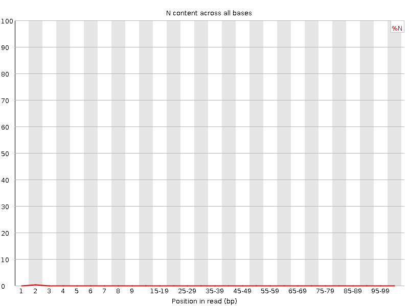

![[OK]](Icons/tick.png) Basic Statistics
Basic Statistics
| Measure | Value |
|---|---|
| Filename | t2.2.fq |
| File type | Conventional base calls |
| Encoding | Sanger / Illumina 1.9 |
| Total Sequences | 33464245 |
| Filtered Sequences | 0 |
| Sequence length | 100 |
| %GC | 38 |
Per base sequence quality
Per sequence quality scores
![[FAIL]](Icons/error.png) Per base sequence content
Per base sequence content
Per base GC content
![[WARN]](Icons/warning.png) Per sequence GC content
Per sequence GC content
Per base N content

Sequence Length Distribution
Sequence Duplication Levels
Overrepresented sequences
No overrepresented sequences
Kmer Content
| Sequence | Count | Obs/Exp Overall | Obs/Exp Max | Max Obs/Exp Position |
|---|---|---|---|---|
| AAAAA | 21972805 | 2.4960654 | 5.5894203 | 2 |
| GAAGA | 7667930 | 2.27766 | 5.146097 | 2 |
| CGCCG | 1639745 | 1.9579781 | 5.183803 | 1 |
| CGACG | 2572315 | 1.9317403 | 7.6127653 | 1 |
| CTTCT | 6789895 | 1.9113849 | 6.2783613 | 1 |
| CGAGG | 2473430 | 1.8890239 | 5.362003 | 1 |
| CGGCG | 1451850 | 1.7630575 | 5.357988 | 1 |
| CGCGG | 1395420 | 1.6945316 | 5.3075843 | 1 |
| TCGAG | 3524895 | 1.6537281 | 5.1039286 | 7 |
| CTCGA | 3569865 | 1.6468594 | 8.715146 | 1 |
| CTGGA | 3469995 | 1.6279715 | 7.118955 | 1 |
| CTTCC | 3571120 | 1.6091487 | 5.761759 | 1 |
| CGCGA | 2128775 | 1.5986536 | 5.805984 | 1 |
| CGAGA | 3380600 | 1.5966564 | 5.405074 | 1 |
| CTTTT | 9029930 | 1.5880451 | 7.103086 | 1 |
| CTCCA | 3480270 | 1.5787176 | 7.7606664 | 1 |
| CGCCA | 2054395 | 1.517034 | 5.7657 | 1 |
| ATCGA | 5090885 | 1.4770361 | 5.452502 | 6 |
| CTTTC | 5231030 | 1.4725577 | 5.2811275 | 1 |
| CTTCG | 3206315 | 1.4693024 | 7.0138764 | 1 |
| CTCGT | 3200925 | 1.4668324 | 7.9859066 | 1 |
| CGATC | 3161960 | 1.4586836 | 5.143147 | 4 |
| CTTCA | 5081290 | 1.4399878 | 6.256548 | 1 |
| CGAAG | 3044835 | 1.4380747 | 5.4654803 | 1 |
| CCGGC | 1201215 | 1.4343404 | 5.30252 | 1 |
| CTGGC | 1882330 | 1.4041729 | 5.2258587 | 1 |
| CTCCT | 3115110 | 1.4036704 | 5.6628084 | 1 |
| CTCGC | 1869865 | 1.3715824 | 6.729207 | 1 |
| CTCGG | 1830550 | 1.3655465 | 8.384417 | 1 |
| CGAAA | 4364800 | 1.2748582 | 5.34274 | 1 |
| GAATC | 4339495 | 1.2590326 | 5.250598 | 4 |
| CTTTG | 4344660 | 1.2438103 | 5.7759256 | 1 |
| CTTGG | 2658420 | 1.2389159 | 5.982054 | 1 |
| CTTGA | 4292010 | 1.236969 | 5.774004 | 1 |
| AATCG | 4214095 | 1.2226498 | 5.069087 | 5 |
| CTCCG | 1397495 | 1.0250897 | 5.263919 | 1 |